专题2.4 有理数的加减运算
专题2.4 有理数的加减运算


教学目标 | 1. 理解有理数加减法运算法则，熟练掌握有理数的加减运算，提升运算准确性与速度。 2. 掌握加法交换律、结合律等运算律，能在有理数运算中灵活运用，简化运算过程。 3. 学会运用有理数的加减运算解决实际问题，增强数学应用意识与问题解决能力。 |
教学重难点 | 1.重点 （1）有理数加法和减法的运算法则，包括同号、异号两数相加以及减法转化为加法的规则。 （2）熟练运用有理数加减法解决实际问题，如行程问题、温度变化、财务收支等场景。 2.难点 （1）有理数减法转化为加法的理解，尤其是对减去一个数等于加上它的相反数这一概念的掌握。 （2）在有理数加减混合运算中，准确处理符号，合理运用运算律优化运算顺序，避免运算错误。 |

知识点01 有理数的加法法则
⑴同号两数相加，取 ，并把绝对值 .
⑵绝对值不相等的异号两数相加，取绝对值 的加数的 ，并用较大的绝对值 较小的绝对值.互为相反数的两个数相加 .
⑶一个数同0相加，仍得 .
【即学即练】计算：
(1)
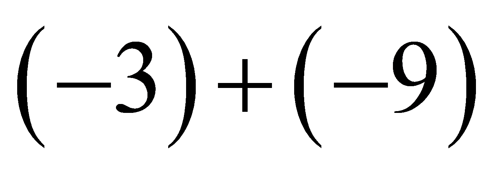
； (2) ； (3)
； (3)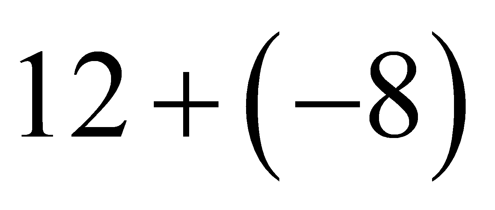
； (4)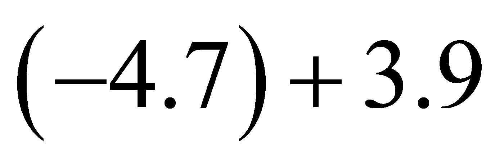
； (5)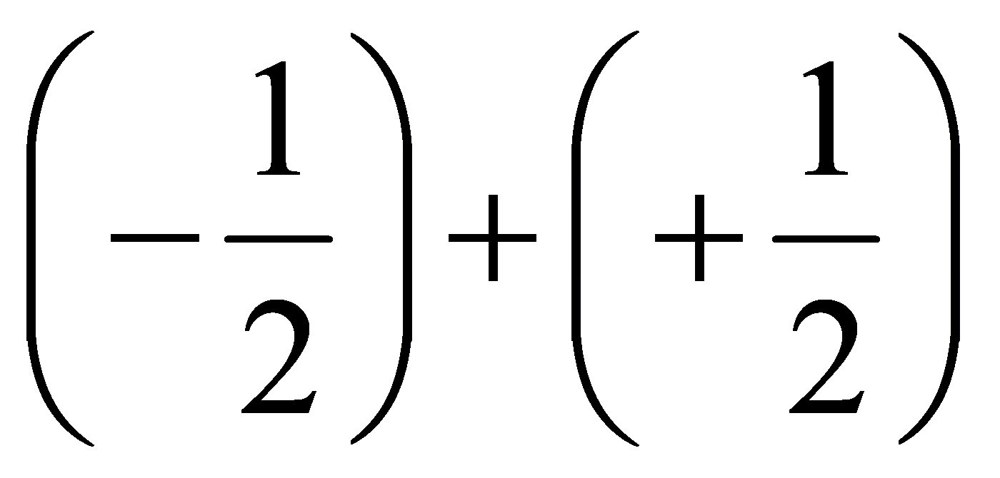
．知识点02 有理数的加法运算定律
（1）加法交换律：两数相加， 的位置，和不变.即a＋b=b＋a；
加法结合律：在有理数加法中，三个数相加，先把前两个数相加或者先把后 相加，和不变.即a＋b＋c=（a＋b）＋c=a＋（b＋c）；
【即学即练】计算：
(1) ；
；
(2) ；
；
(3) ．
．
知识点03 有理数的减法法则
减法法则： 一个数，等于 .即a－b=a＋（﹣）b
【即学即练】1．（2024七年级上·全国·专题练习）计算：
(1) ； (2)
； (2) ； (3)
； (3)
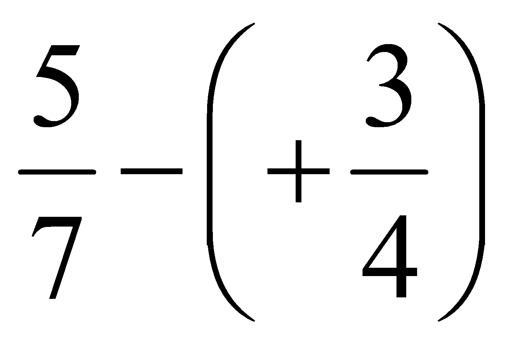
； (4) ．
．
题型01 有理数的加法运算
【典例1】计算下列各题：
(1)
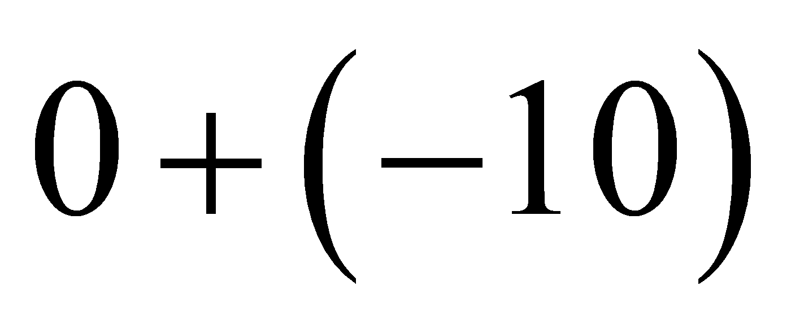
；(2) ；
；
(3) ；
；
(4) ．
．
【变式1】计算：
(1)
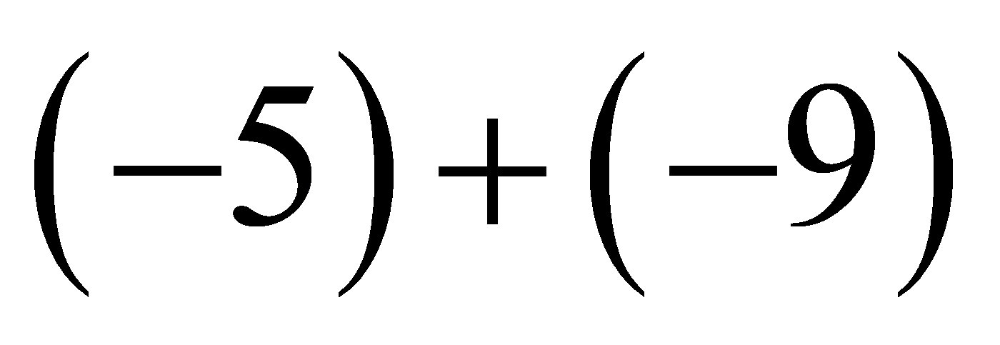
(2)
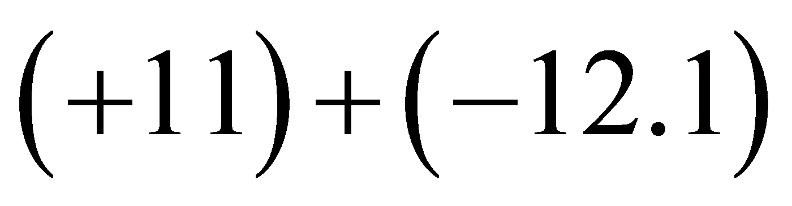
(3)
(4)
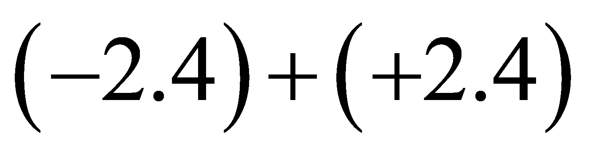
(5)
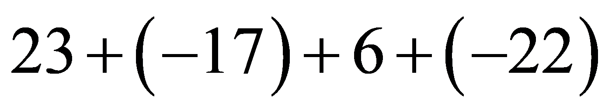
(6)
【变式2】计算：
(1) ；
；
(2)
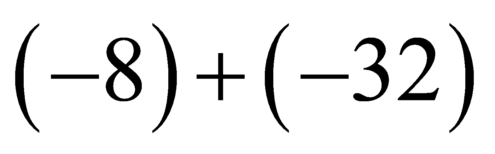
；(3)
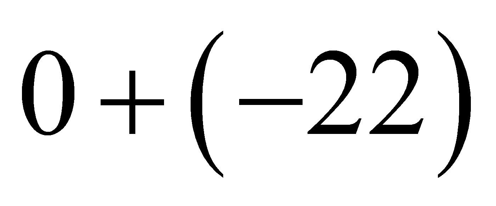
；(4) ；
；
(5) ；
；
(6) ．
．
【变式3】计算：
(1) ；
；
(2) ；
；
(3) ；
；
(4)
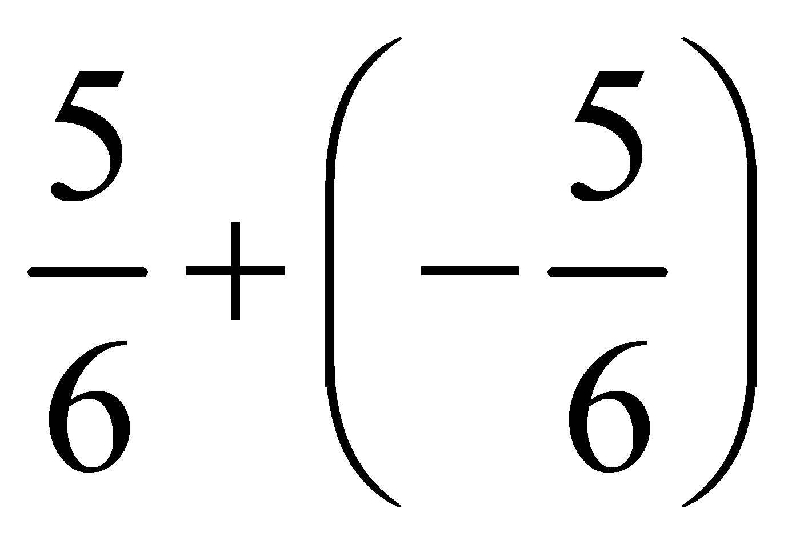
；(5) ；
；
(6)
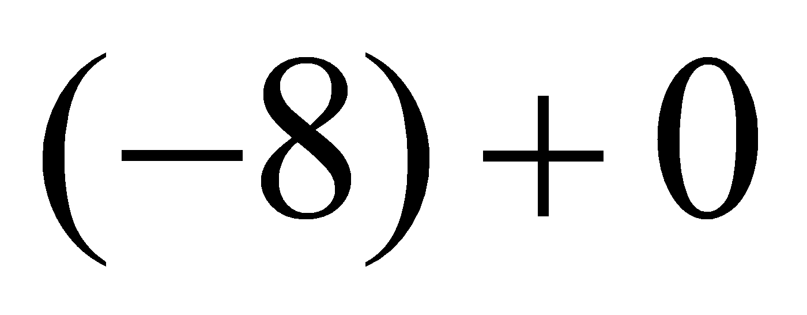
．题型02 有理数加法中的符号问题
【典例2】如果两数和为正数、下列说法中正确的是（ ）
A．两个加数都是正数 B．一个加数是正数，另一个加数是负数
C．两个加数的差是正数 D．绝对值数较大的加数必是正数
【变式1】下列说法中正确的是（ ）
A．两数相加，其和大于任何一个加数
B．异号两数相加，其和小于任何一个加数
C．绝对值相等的异号两数相加，其和一定为零
D．两数相加，取较小一个加数的符号作为结果的符号
【变式2】两个有理数的和为负数，那么这两个数一定（ ）
A．都是负数 B．至少有一个是负数
C．有一个是0 D．绝对值不相等
【变式3】下列说法正确的是（ ）
A．若
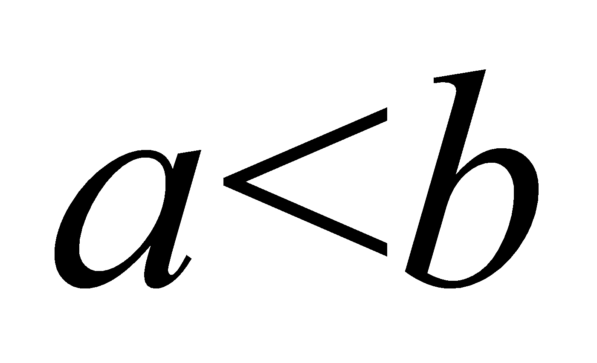
，则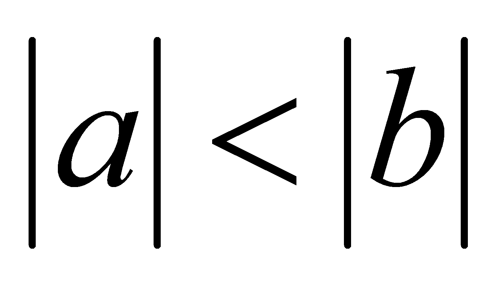
B．a为任何有理数，则 必为负数
必为负数
C．两个有理数的和为负数，则这两个数中至少有一个是负数
D．若
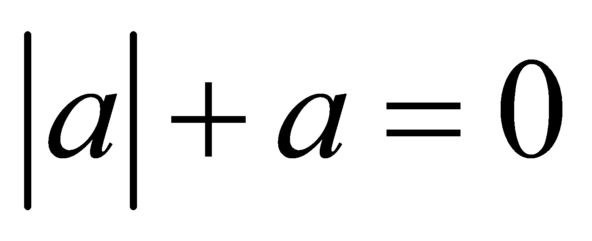
，则a为非负数题型03 有理数加法运算律
【典例3】计算：
(1) ；
；
(2)
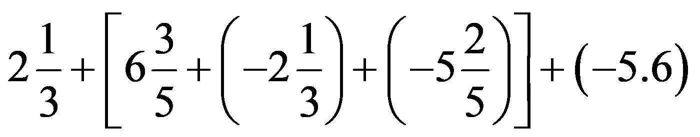
．【变式1】计算：
(1) ；
；
(2)
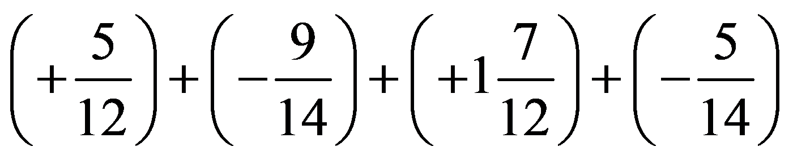
．【变式2】计算：
(1) ；
；
(2) ；
；
(3) ．
．
【变式3】阅读第①小题的计算方法，再计算第②小题．
①
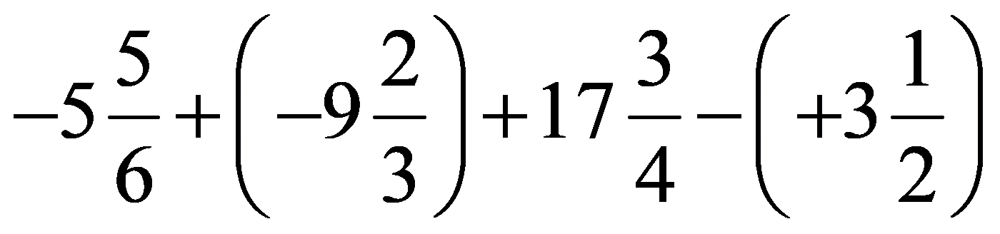
解：原式
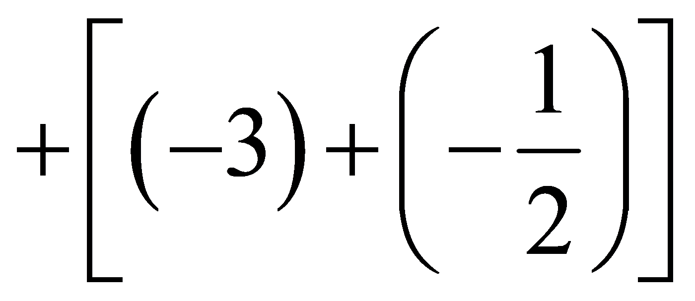

 ．
．
上述这种方法叫作拆项法．灵活运用加法的交换律、结合律可使运算简便．
②仿照上面的方法计算：
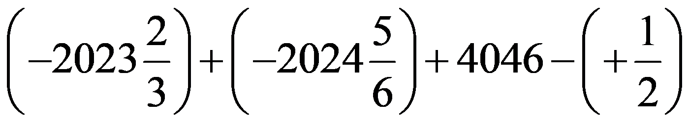
．题型04 有理数加法在生活中的应用
【典例4】2024年国庆节，全国放假七日，高速公路免费通行，各地风景区游人如织．位于贵州遵义的乌江寨国际旅游度假区，在10月1日的景区接待游客人数为1.2万人次，接下来的六天中，每天的游客人数变化如下表（正数表示比前一天多的人数，负数表示比前一天少的人数）．
日期 | 10月2日 | 10月3日 | 10月4日 | 10月5日 | 10月6日 | 10月7日 |
人数变化（万人） |
|
|
|
|
| 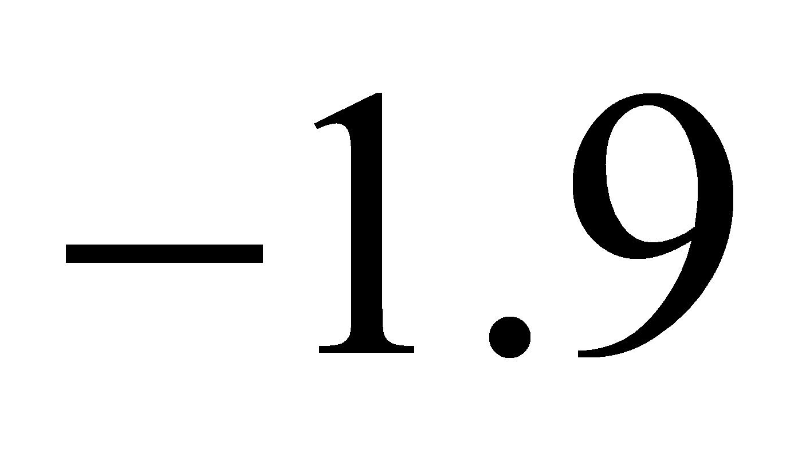 |


(1)10月3日的接待游客人数为__________万人次．
(2)国庆假期里，游客人数最多的是10月__________日，达到__________万人次；游客人数最少的是10月__________日，达到__________万人次．
(3)请问该景区在这国庆期间一共接待了多少人次游客？
【变式1】有6筐白菜，以每筐25千克为标准，超过的千克数记作正数，不足的千克数记作负数，称后的纪录如下：
编号 | 1 | 2 | 3 | 4 | 5 | 6 |
超过（或不足） |
|
| 2 |
| 1 |
|


回答下列问题：
(1)这6筐白菜中最接近标准重量的这筐白菜重 千克；
(2)与标准重量比较，6筐白菜总计超过或不足多少千克？
【变式2】无人机社团课上，悠悠同学在操纵一架无人机进行功能测试，无人机从地面起飞后的高度变化情况如下表：
操作次数 | 第1次 | 第2次 | 第3次 | 第4次 | 第5次 |
高度变化 | 上升 | 下降 | 下降 | 上升 | 下降 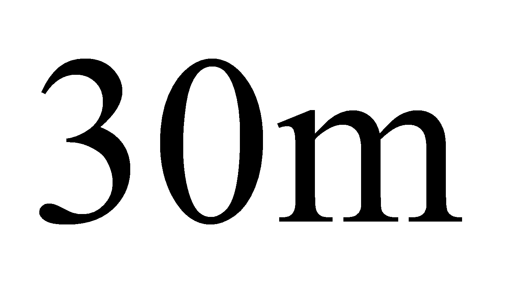 |
记作 |
| 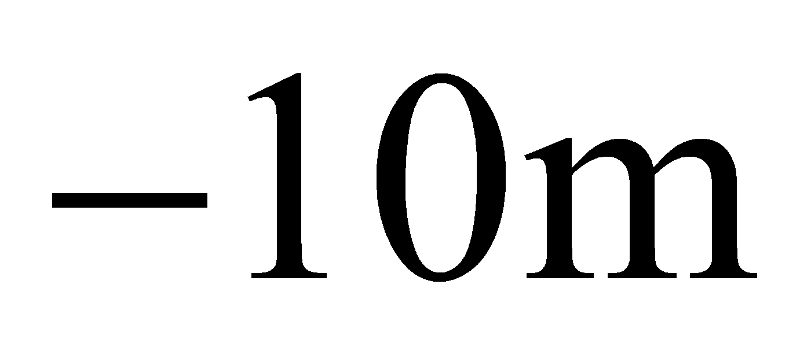 | 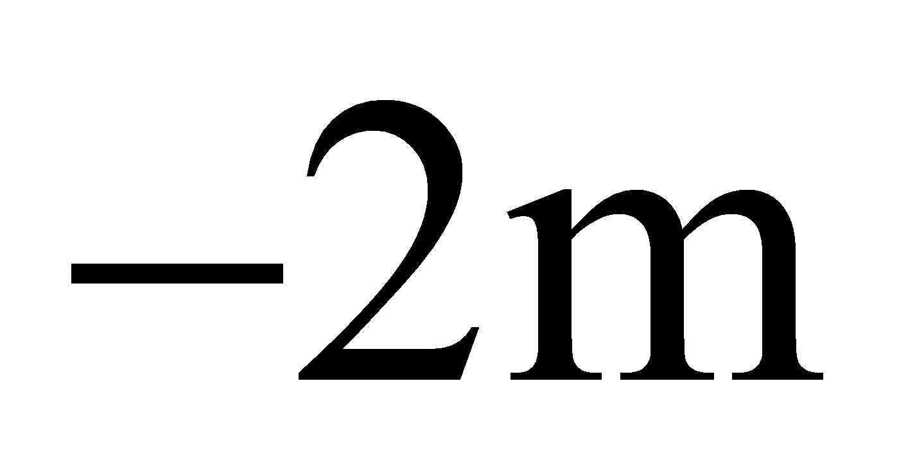 | 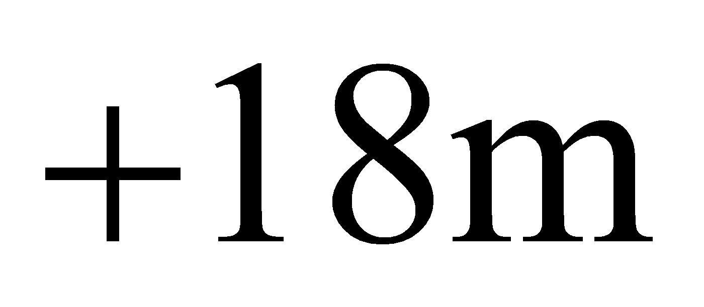 |
|


(1)请你依据表格中的信息计算无人机飞行中的最大高度是多少 ？
？
(2)五次操作后，无人机共飞行了多少？
【变式3】2024国庆假期，全国从10月1日到7日放假7天，各地景区游人如织，西安文旅市场热度不减．据统计，西安位列国庆假日“热门目的地”第二、“高铁游热门目的地”第五、“入境游热门目的地”第八，世界人文之都魅力进一步彰显．在9月30日西安城墙的游客人数为0.9万人，接下来的七天中，每天的游客人数变化如下表（正数表示比前一天多的人数，负数表示比前一天少的人数）．
日期 | 10月1日 | 10月2日 | 10月3日 | 10月4日 | 10月5日 | 10月6日 | 10月7日 |
人数变化（万人） |
|
|
|
|
|
|
|


(1)七天假期里，游客人数最多的是10月_____日，达到_____万人．游客人数最少的是10月_____日，达到_____万人．
(2)请问西安城墙在这七天内一共接待了多少游客？
(3)如果你爸妈的朋友也打算明年国庆节来逛西安城墙，你对他们出行的日期有何建议？为什么这么建议？
题型05 有理数的减法运算
【典例5】计算：
(1)
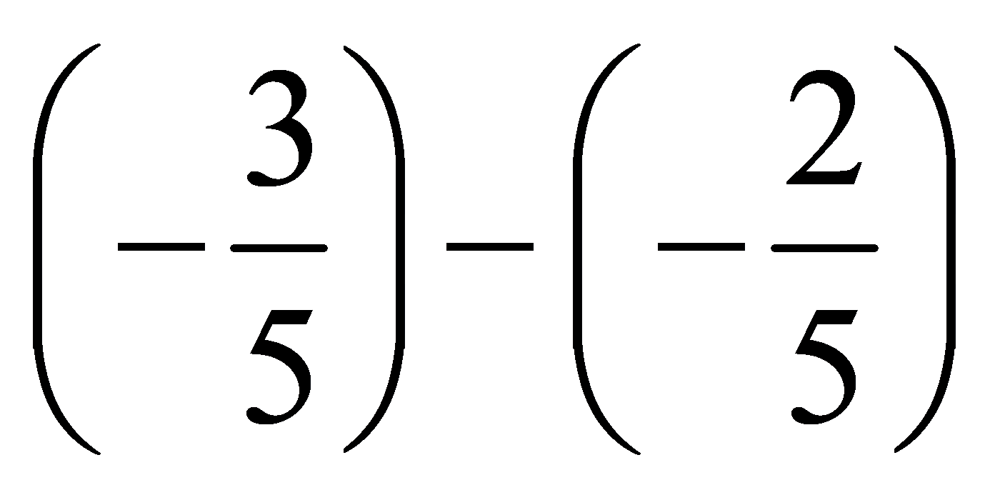
；(2) ；
；
(3) ；
；
(4) ．
．
【变式1】计算
(1)
(2)
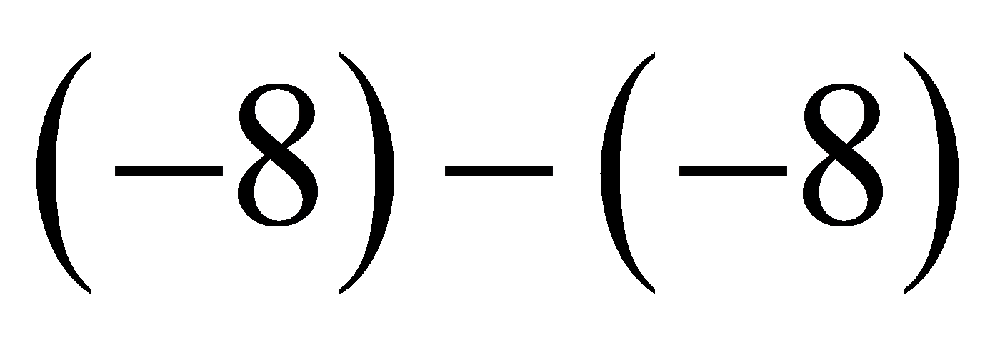
(3)
(4)
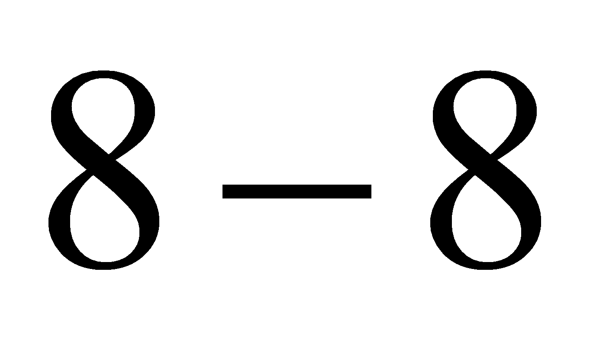
(5)
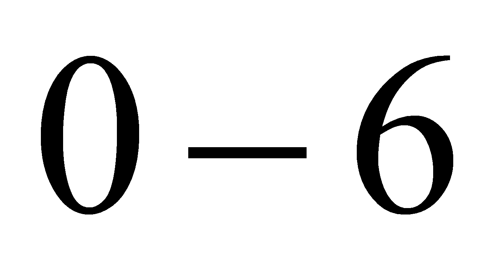
(6)
(7)
(8)
(9)
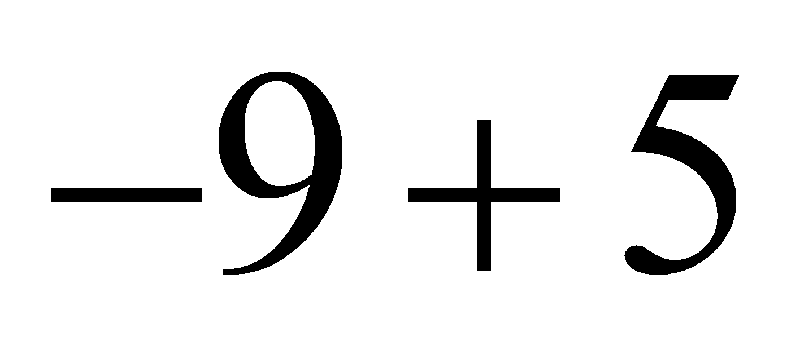
【变式2】计算：
(1)
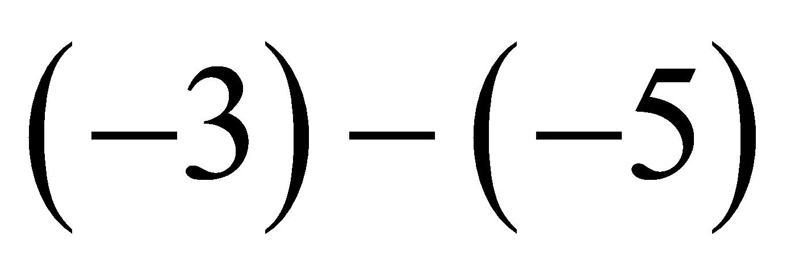
；(2)
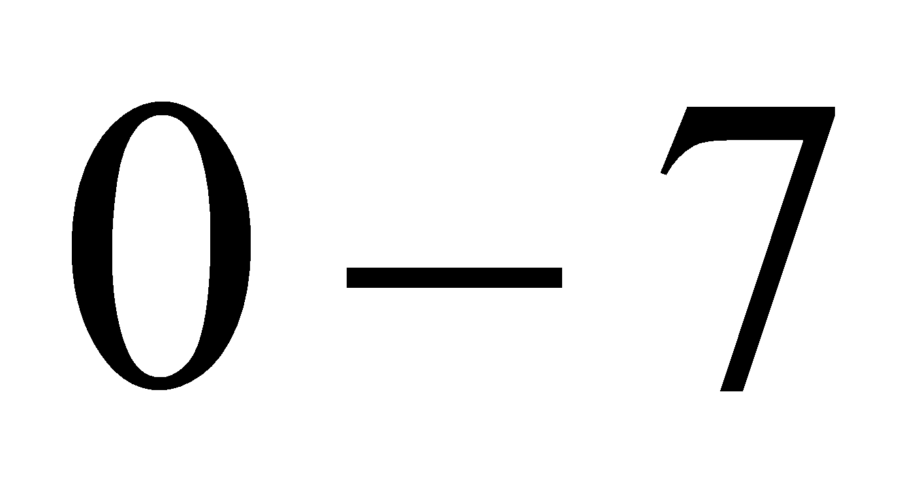
；(3) ；
；
(4) ；
；
(5) ．
．
【变式3】计算：
(1) ；
；
(2)
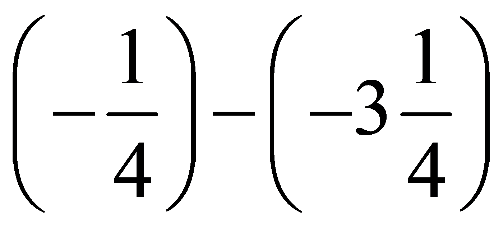
；(3) ；
；
(4) ；
；
(5) ．
．
题型06 有理数的加减混合运算中去括号问题
【典例6】算式
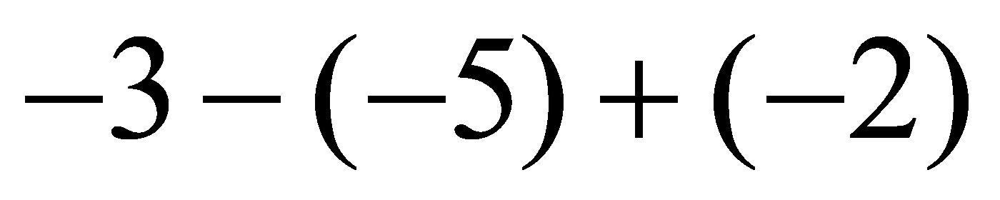
写成省略加号的和式，正确的是（ ）A． B．
B．
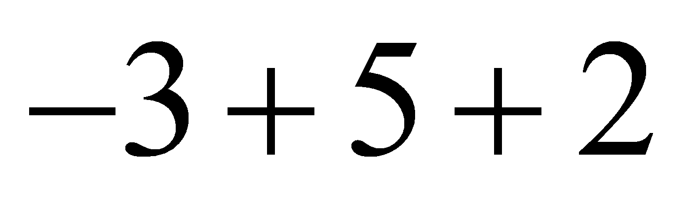
C． D．
D．
【变式1】把
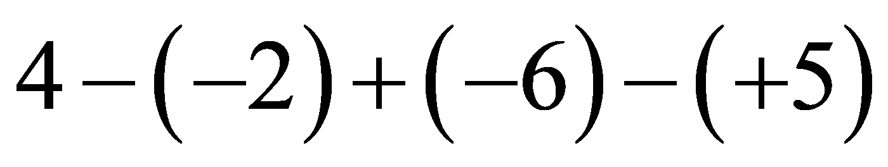
写成省略加号和的形式为（ ）A． B．
B． C．
C． D．
D．
【变式2】将式子 改写成省略括号的形式为( )
改写成省略括号的形式为( )
A． B．
B．
C． D．
D．
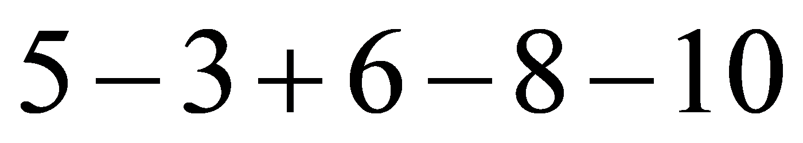
【变式3】为计算简便，把
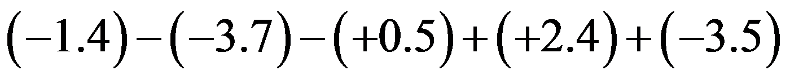
写成省略括号和加号的和的形式，正确的是（ ）A．
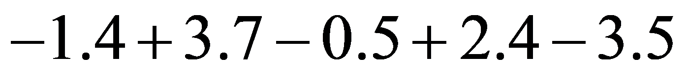
B．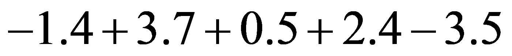
C．
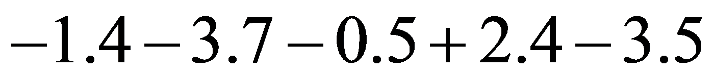
D．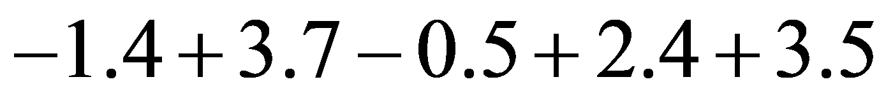
题型07 有理数的加减混合运算
【典例7】计算：
(1)
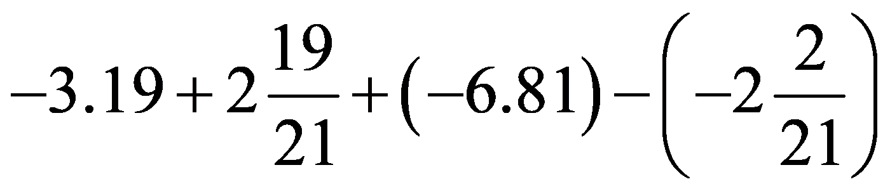
．(2)
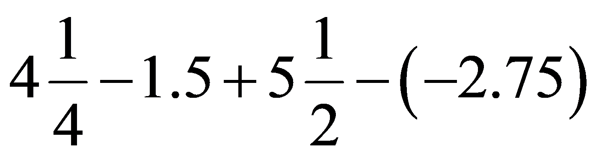
．【变式1】计算：
(1)
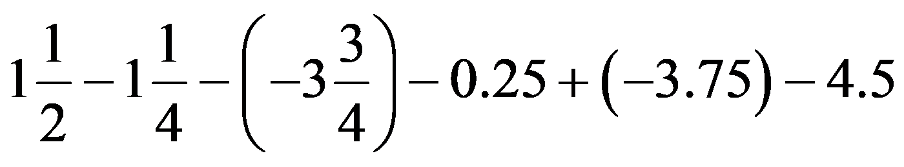
；(2) ．
．
【变式2】计算：
(1) ；
；
(2)
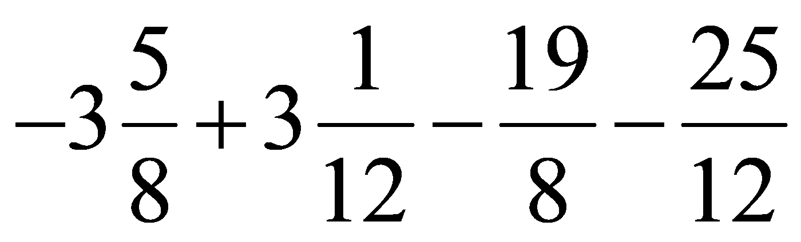
；(3)
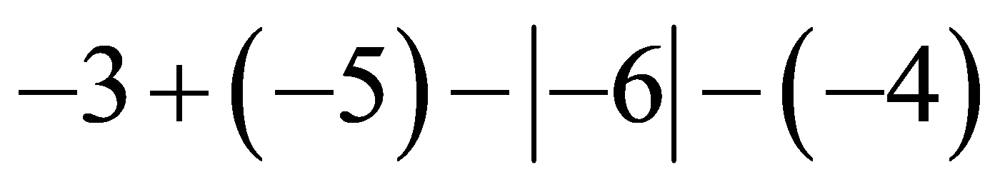
；(4)
【变式3】计算：
(1) ；
；
(2) ；
；
(3) ．
．
题型08 有理数的加减中的简便运算
【典例8】计算：
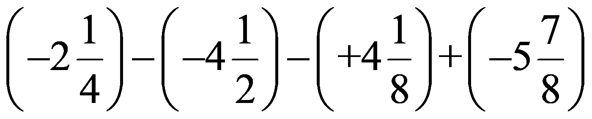
；【变式1】计算：
(1)；
(2) ．
．
【变式2】计算
(1)
(2)
【变式3】计算：
(1)
(2)．
题型09 有理数的加减混合运算的应用
【典例9】流花河的警戒水位是 米，下表记录的是今年某一周内的水位变化情况，取河流的警戒水位作为0点，并且上周末（星期日）的水位达到警戒水位，正号表示水位比前一天上升，负号表示水位比前一天下降．
米，下表记录的是今年某一周内的水位变化情况，取河流的警戒水位作为0点，并且上周末（星期日）的水位达到警戒水位，正号表示水位比前一天上升，负号表示水位比前一天下降．
星期 | 一 | 二 | 三 | 四 | 五 | 六 | 日 |
水位变化（米） |
|
|
|


注：正号表示水位比前一天上升，负号表示水位比前一天下降
(1)请在下表中填写本周流花河每天的实际水位高度情况：
星期 | 一 | 二 | 三 | 四 | 五 | 六 | 日 |
实际高度/米 |
(2)本周哪一天河流的水位最高？哪一天河流的水位最低？它们位于警戒水位之上还是之下？与警戒水位的距离分别是多少米？
星期 | 一 | 二 | 三 | 四 | 五 | 六 | 日 |
实际高度/米 |
|
| 74 |


【变式1】足球比赛中，根据场上攻守形势，守门员会在门前来回跑动，如果以球门线为基准，向前跑记作正数，返回则记作负数，一段时间内，某守门员的跑动情况记录如下（单位：）：， ，
， ，，
，， ，
， ，
， ，
， ．（假定开始计时时，守门员正好在球门线上）
．（假定开始计时时，守门员正好在球门线上）
(1)守门员最后是否回到球门线上？
(2)守门员离开球门线的最远距离达多少米？
(3)如果守门员离开球门线的距离超过 （不包括），则对方球员挑射极可能造成破门．问：在这一时间段内，对方球员有几次挑射破门的机会？简述理由．
（不包括），则对方球员挑射极可能造成破门．问：在这一时间段内，对方球员有几次挑射破门的机会？简述理由．
【变式2】财商教育有助于培养孩子的独立生活能力和积极向上的价值观、社会责任感．小昆在妈妈的协助下，通过售卖废报纸、饮料瓶，转卖二手书，义卖闲置物品等方式获得一定收入，并用于购买学习用具和一些日常所需品．为了更好的理财，他每周做一次收支记录，其中一个月的收入和支出记录如下（收入用“ ”，支出用“
”，支出用“ ”，单位：元）：
”，单位：元）：
 ，，
，， ，
， ，
， ，，，
，，， ．
．
(1)小昆这个月是超支了还是有结余？如果超支，超支了多少？如果结余，结余了多少？
(2)若规定：收入 元，支出
元，支出 元，经手金额为
元，经手金额为 元，则小昆这个月经手总金额离
元，则小昆这个月经手总金额离 元超过或不足多少元？
元超过或不足多少元？
【变式3】如图是流花河的水文资料（单位：m），如表是今年雨季流花河一周内的水位变化情况（上周末的水位达到警戒水位）．
星期 | 一 | 二 | 三 | 四 | 五 | 六 | 日 |
水位变化m |
|
|
|


注：正号表示水位比前一天上升，负号表示水位比前一天下降．
(1)若取河流的警戒水位作为0点，那么图中平均水位可以记作 m；
(2)请通过计算说明本周哪一天河流的水位最高？最高水位为多少米？
(3)与上周末相比，本周末河流水位是上升了还是下降了？上升或下降了多少米？
题型10 根据点在数轴的位置判断式子的正负
【典例10】已知有理数 ，
， 在数轴上对应点的位置如图所示，则下列结论正确的（ ）
在数轴上对应点的位置如图所示，则下列结论正确的（ ）
A． B．
B． C．
C． D．
D．
【变式1】有理数在数轴上的位置如图所示，下列结论正确的是（ ）
A． B．
B． C．
C． D．
D．
【变式2】数轴上表示，， 的点如图所示，下列式子中正确的是（ ）
的点如图所示，下列式子中正确的是（ ）

A． B．
B． C．
C． D．
D．
【变式3】有理数a，b，c在数轴一所对应的点如图所示．则下列结论正确的是（ ）

A．  B．
B．  C． D．
C． D．
题型11 新定义下的有理数加减混合运算
【典例11】定义一种新运算：规定 ，例如
，例如 ．计算以下式子
．计算以下式子
(1)
(2)
【变式1】对于有理数 定义一种新运算，
定义一种新运算， ．例：．
．例：．
(1)求 的值；
的值；
(2)求 的值．
的值．
【变式2】用“ ”定义一种新运算：对于任意有理数a和b，规定．如
”定义一种新运算：对于任意有理数a和b，规定．如
．
(1)计算： ；
；
(2)计算： ．
．
【变式3】对于有理数、定义一种新运算“ ”，规定：
”，规定： ．
．
例如：．
(1)填空： ______，
______， ______，______；
______，______；
(2)若 ，则
，则 的结果为______；
的结果为______；
(3)判断“”运算是否满足交换律并说明理由．

一、单选题
1．计算： （ ）
（ ）
A． B．5 C．
B．5 C． D．1
D．1
2．把写成省略括号的和的形式是（ ）
A． B． C．
C． D．
D．
3．为监测某水库雨季期间的水位高度，表一记录了该水库连续三天的水位变化情况（记水位上涨为正，单位： ），这三天水位上涨的高度可表示为（ ）
），这三天水位上涨的高度可表示为（ ）
A． B．
B．
C． D．
4．我国是最早认识负数并进行相关运算的国家，魏晋时期的数学家刘徽在其著作《九章算术注》中，用不同颜色的算簿（小棍形状的记数工具）分别表示正数和负数，如图①表示的是 的运算过程．按照这种方法，图②中表示的算式是（ ）
的运算过程．按照这种方法，图②中表示的算式是（ ）

A． B．
C． D．
D．
5．实数 在数轴上对应的点的位置如图所示，下列结论正确的是（ ）
在数轴上对应的点的位置如图所示，下列结论正确的是（ ）

A． B． C．
C． D．
D．
二、填空题
6．计算： ．
．
7．若 是最小的正整数，
是最小的正整数， 是到原点的距离等于2的负数，
是到原点的距离等于2的负数， 是最大的负整数，则
是最大的负整数，则 的值为 ．
的值为 ．
8．在虚拟环境中，输入“ ”可以让虚拟机器人向右走2格，输入“
”可以让虚拟机器人向右走2格，输入“ ”可以让虚拟机器人向左走2格，如图，虚拟机器人在起点O处，若先输入“
”可以让虚拟机器人向左走2格，如图，虚拟机器人在起点O处，若先输入“ ”，再输入“
”，再输入“ ”，则虚拟机器人会走到数字 的位置上．
”，则虚拟机器人会走到数字 的位置上．
9．规定图形表示运算 ，图形表示运算
，图形表示运算 ，则
，则 ＋
＋ = ．（直接写出答案）
= ．（直接写出答案）
10．若A、B是数轴上两点，点A到原点的距离是6个单位长度，点B到点A的距离也是6个单位长度，则点B表示的数是 ．
三、解答题
11．计算：
(1)；
(2) ．
．
12．计算：
(1)；
(2)；
(3)．
13．计算．
(1)；
(2) ；
；
(3)；
(4) ．
．
14．已知， ，且
，且 ，求
，求 的值．
的值．
15．阅读理解下题的计算方法，并解决问题：
计算： ．
．
解：原式

 ．
．
上面的方法叫作拆项法，按此方法计算：
 ．
．
16．有理数，，在数轴上对应点的位置如图所示，已知 ．
．

(1)原点在的______（填“左侧”或“右侧”）；
(2)用“ ”“
”“ ”或“＝”填空：
”或“＝”填空：
① ______
______ ；②
；② ______0；③______0；
______0；③______0；
(3)若每个单位长度为2，求 的值．
的值．
17．足球比赛中，根据场上攻守形势，守门员会在门前来回跑动，如果以球门线为基准，向前跑记作正数，返回则记作负数，一段时间内，某守门员的跑动情况记录如下（单位：m）：， ，
， ，
， ，，
，， ，
， ，
， ．（假定开始计时时，守门员正好在球门线上）
．（假定开始计时时，守门员正好在球门线上）
(1)守门员最后是否回到球门线上？
(2)守门员离开球门线的最远距离达多少米？
(3)如果守门员离开球门线的距离超过10m（不包括10m），则对方球员挑射极可能造成破门，问：在这一时间段内，对方球员有几次挑射破门的机会？简述理由．
18．数轴是规定了原点、正方向、单位长度的直线，我们可以根据需要，“规定”原点的位置；也可以根据需要，“规定”单位长度的大小；还可以根据需要，“规定”正方向．在一条不完整的数轴上，从左到右有A，B，C，其中 ，
， ，如图所示，设A，B，C所对应数的和是p．
，如图所示，设A，B，C所对应数的和是p．

(1)若以点C为原点，则A、B对应的数分别为 ， ， ．
．
(2)若原点为O，且，求p．
(3)若以 中点为原点，单位长度为
中点为原点，单位长度为 建立数轴，则 ．（用含n的代数式表示）
建立数轴，则 ．（用含n的代数式表示）